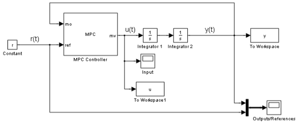
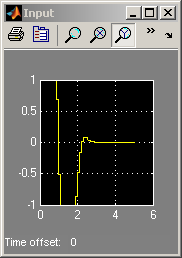
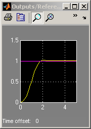

MPC Control of a Double Integrator
Contents
This very simple demonstration shows how to use MPC to control a double integrator under input saturation in Simulink®.
MPC Controller Setup
if ~mpcchecktoolboxinstalled('simulink') disp('Simulink(R) is required to run this demo.') return end
Ts = .1; % Sampling time p = 20; % Prediction horizon m = 3; % Control horizon mpc_controller = mpc(tf(1,[1 0 0]),Ts,p,m); % MPC object mpc_controller.MV=struct('Min',-1,'Max',1); % Input saturation constraints
-->The "Weights.ManipulatedVariables" property of "mpc" object is empty. Assuming default 0.00000. -->The "Weights.ManipulatedVariablesRate" property of "mpc" object is empty. Assuming default 0.10000. -->The "Weights.OutputVariables" property of "mpc" object is empty. Assuming default 1.00000.
MPC Simulation Using Simulink®
x01=0; % Initial state: First integrator x02=0; % Initial state: Second integrator Tstop=5; % Simulation time r=1; % Set point
open_system('mpc_doubleint'); % Open Simulink(R) Model sim('mpc_doubleint',Tstop); % Start Simulation
-->Converting the "Model.Plant" property of "mpc" object to state-space. -->Converting model to discrete time. -->MPC problem is constrained and "ManipulatedVariables.RateMin" is not completely specified or has infinite values. Setting values to -10 to prevent numerical problems in QP. -->The "Model.Noise" property of the "mpc" object is empty. Assuming white noise on each measured output channel.  
bdclose('mpc_doubleint');